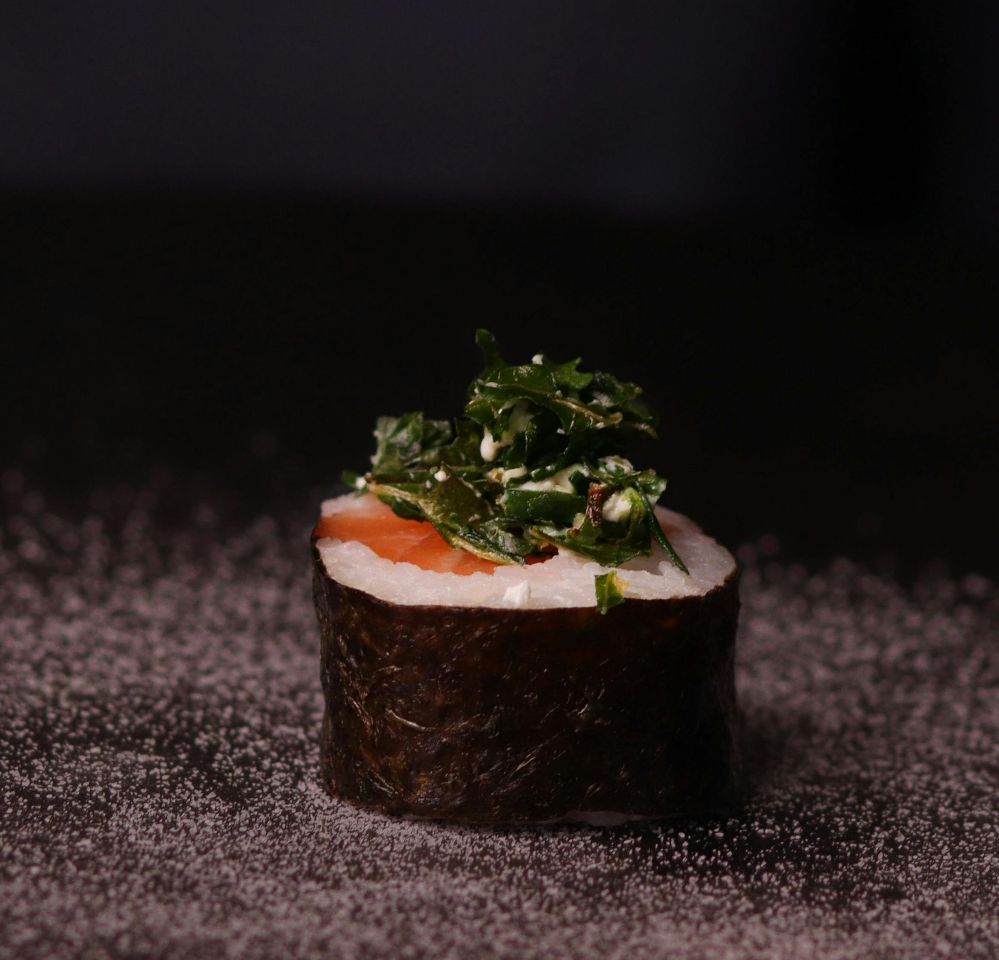

Sushi
Home

Description
Homemade salmon roll made with sushi rice, nori, and smoked salmon.
Ingredients
- 2 cups Japanese sushi rice
- 6 tablespoons rice wine vinegar
- 6 sheets nori (dry seaweed)
- 2 tablespoons wasabi paste
- 8 ounces smoked salmon, cut into long strips
- 1 cucumber, peeled and sliced
- 1 avocado - peeled, pitted and sliced
Steps
Step 1
- Soak rice for 4 hours. Drain rice and cook in a rice cooker with 2 cups of water.
Rice must be slightly dry as vinegar will be added later.
Step 2
- Immediately after rice is cooked, mix in rice wine vinegar; spread rice on a plate
until completely cool.
Step 3
- Place 1 sheet of seaweed on a bamboo mat; press a thin layer of cool rice on
seaweed, leaving at least a 1/2 inch top and bottom edge of the seaweed
uncovered. This is for easier sealing later. Dot some wasabi on rice; arrange
smoked salmon, cucumber, and avocado on rice about 1 inch away from the
bottom edge of seaweed.
Step 4
- Slightly wet the top edge of seaweed; roll up tightly from the bottom to the top
edge with the help of the bamboo mat. Cut salmon roll into 8 equal pieces and
serve. Repeat for other rolls.